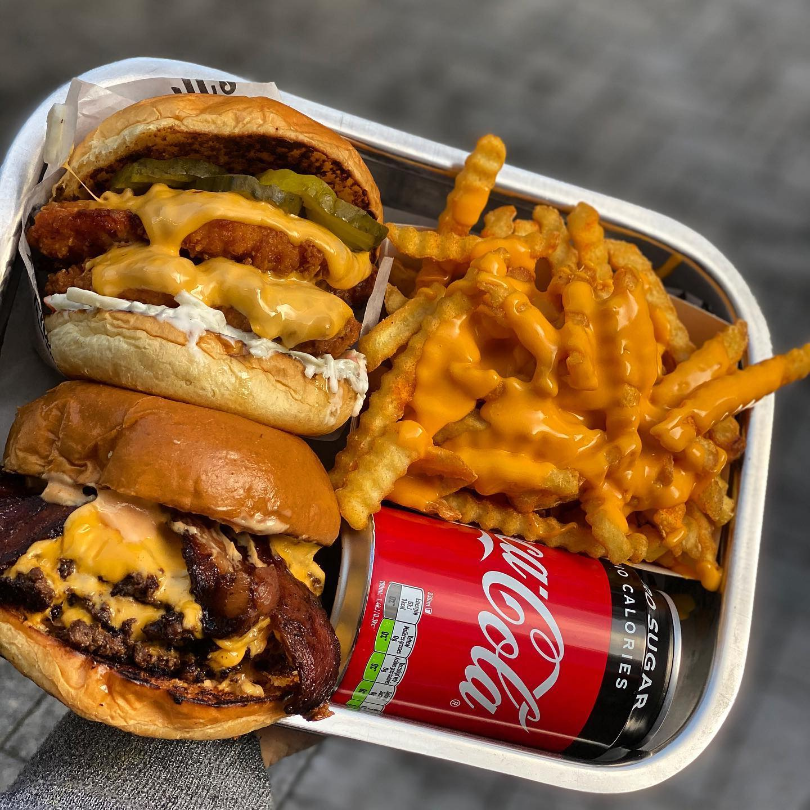
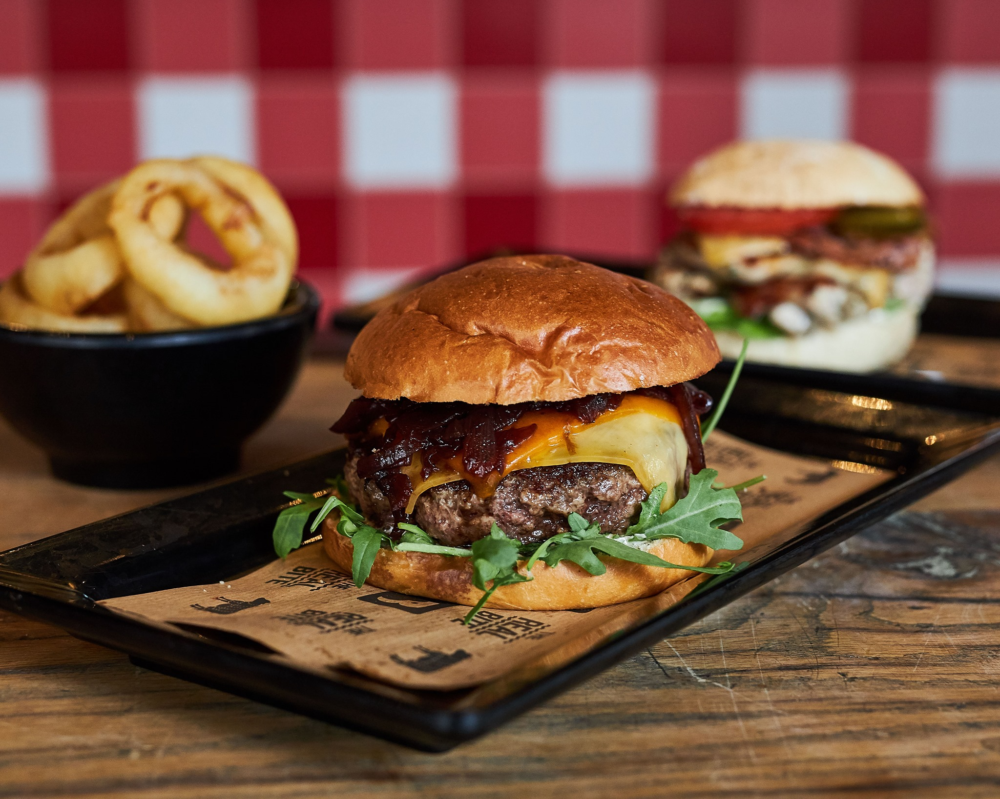
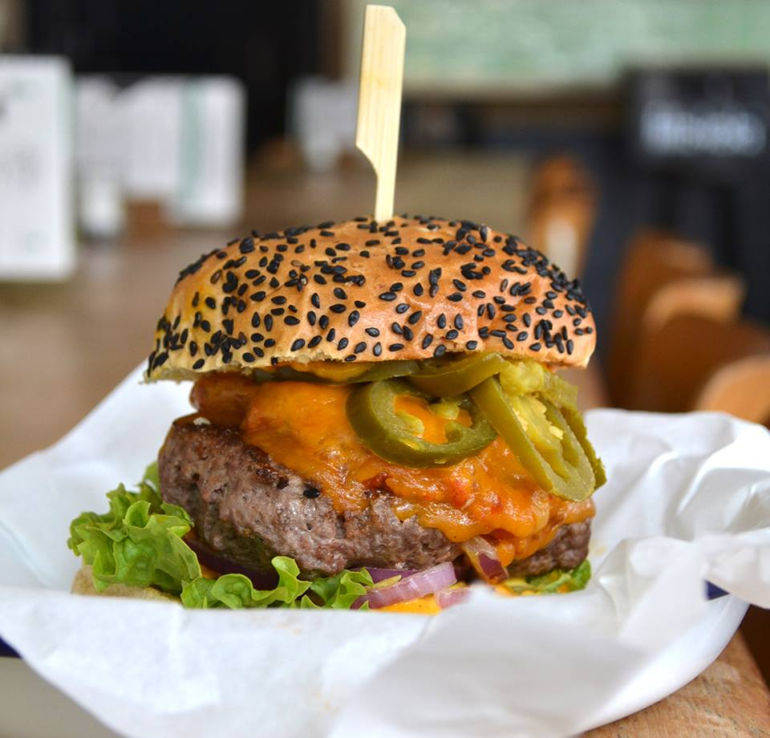

Amsterdam's Top 3 Burger Spots
Fat Phills Diner
This is an amazing hole in the wall restaurant, specializing in great burgers and a quick turn-around. The menu is small, but the flavor is big. Everything is made fresh in front of your eyes. Fat Phills has a nice indor/outdoor seating area to relax and enjoy the scenery but if you’re running short on time, you can order online, or grab your food to go. This is deemed one of the best burger places in town.
Google map and reviewsBurger Bar
There are various locations around Amsterdam, so there will always be one close enough to get your fix. Burger buns are baked locally and the beef patties are minced in house on a daily basis. The burgers are prepared individually to order and cooked whilst you wait, ensuring optimum freshness and taste. Their specialty is a boat delivery service to the dock at the Prinsengracht location.
Google map and reviewsGeflipt Burgers
Flipped has a cozy living room atmosphere where you can come together with a friend or your entire group of friends for a pleasant evening out. It’s a real Amsterdam eatery, specializing in the best burgers, through the use of local, sustainable ingredients. At Geflipt you get the tastiest burgers and can enjoy a delicious (special) beer, cocktail or wine in a nice casual atmosphere.
Google map and reviews